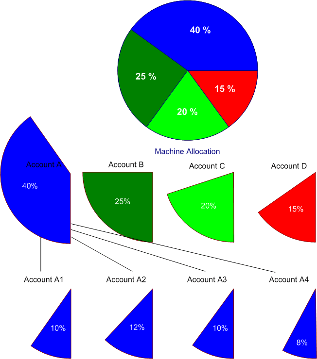
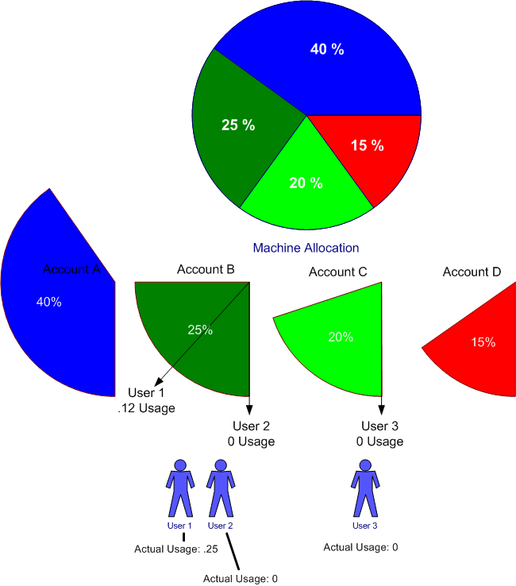
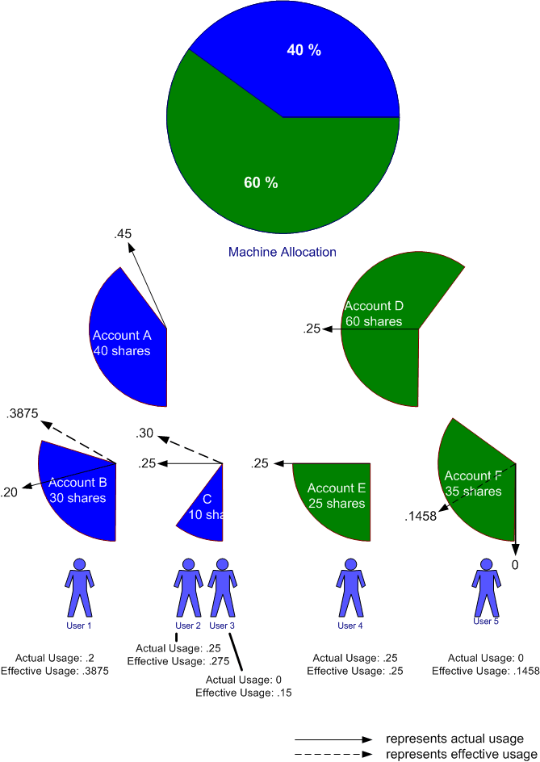

Classic Fairshare Algorithm
Overview
As of the 19.05 release, the Fair Tree algorithm is now the default, and the classic fair share algorithm is only available if PriorityFlags=NO_FAIR_TREE has been explicitly configured.
Normalized Shares
The fair-share hierarchy represents the portion of the computing resources that have been allocated to different projects. These allocations are assigned to an account. There can be multiple levels of allocations made as allocations of a given account are further divided to sub-accounts:

Figure 1. Machine Allocation
The chart above shows the resources of the machine allocated to four accounts: A, B, C and D. Furthermore, account A's shares are allocated to sub-accounts A1 through A4. Users are granted permission (through sacctmgr) to submit jobs against specific accounts. If there are 10 users given equal shares in Account A3, they will each be allocated 1% of the machine.
A user's normalized shares are simply:
S = (Suser / Ssiblings) * (Saccount / Ssibling-accounts) * (Sparent / Sparent-siblings) * ...Where:
- S
- is the user's normalized share, between zero and one
- Suser
- are the number of shares of the account allocated to the user
- Ssiblings
- are the total number of shares allocated to all users permitted to charge the account (including Suser)
- Saccount
- are the number of shares of the parent account allocated to the account
- Ssibling-accounts
- are the total number of shares allocated to all sub-accounts of the parent account
- Sparent
- are the number of shares of the grandparent account allocated to the parent
- Sparent-siblings
- are the total number of shares allocated to all sub-accounts of the grandparent account
Normalized Usage
The processor*seconds allocated to every job are tracked in real-time. If one only considered usage over a fixed time period, then calculating a user's normalized usage would be a simple quotient:
UN = Uuser / UtotalWhere:
- UN
- is normalized usage, between zero and one
- Uuser
- is the processor*seconds consumed by all of a user's jobs in a given account for over a fixed time period
- Utotal
- is the total number of processor*seconds utilized across the cluster during that same time period
However, significant real-world usage quantities span multiple time periods. Rather than treating usage over a number of weeks or months with equal importance, Slurm's fair-share priority calculation places more importance on the most recent resource usage and less importance on usage from the distant past.
The Slurm usage metric is based off a half-life formula that favors the most recent usage statistics. Usage statistics from the past decrease in importance based on a single decay factor, D:
UH = Ucurrent_period + ( D * Ulast_period) + (D * D * Uperiod-2) + ...Where:
- UH
- is the historical usage subject to the half-life decay
- Ucurrent_period
- is the usage charged over the current measurement period
- Ulast_period
- is the usage charged over the last measurement period
- Uperiod-2
- is the usage charged over the second last measurement period
- D
- is a decay factor between zero and one that delivers the half-life decay based off the PriorityDecayHalfLife setting in the slurm.conf file. Without accruing additional usage, a user's UH usage will decay to half its original value after a time period of PriorityDecayHalfLife seconds.
In practice, the PriorityDecayHalfLife could be a matter of seconds or days as appropriate for each site. The decay is recalculated every PriorityCalcPeriod minutes, or 5 minutes by default. The decay factor, D, is assigned the value that will achieve the half-life decay rate specified by the PriorityDecayHalfLife parameter.
The total number of processor*seconds utilized can be similarly aggregated with the same decay factor:
RH = Rcurrent_period + ( D * Rlast_period) + (D * D * Rperiod-2) + ...Where:
- RH
- is the total historical usage subject to the same half-life decay as the usage formula.
- Rcurrent_period
- is the total usage charged over the current measurement period
- Rlast_period
- is the total usage charged over the last measurement period
- Rperiod-2
- is the total usage charged over the second last measurement period
- D
- is the decay factor between zero and one
A user's normalized usage that spans multiple time periods then becomes:
U = UH / RH
Simplified Fair-Share Formula
The simplified formula for calculating the fair-share factor for usage that spans multiple time periods and subject to a half-life decay is:
F = 2**(-U/S/d)Where:
- F
- is the fair-share factor
- S
- is the normalized shares
- U
- is the normalized usage factoring in half-life decay
- d
- is the FairShareDampeningFactor (a configuration parameter, default value of 1)
The fair-share factor will therefore range from zero to one, where one represents the highest priority for a job. A fair-share factor of 0.5 indicates that the user's jobs have used exactly the portion of the machine that they have been allocated. A fair-share factor of above 0.5 indicates that the user's jobs have consumed less than their allocated share while a fair-share factor below 0.5 indicates that the user's jobs have consumed more than their allocated share of the computing resources.
The Fair-share Factor Under An Account Hierarchy
The method described above presents a system whereby the priority of a user's job is calculated based on the portion of the machine allocated to the user and the historical usage of all the jobs run by that user under a specific account.
Another layer of "fairness" is necessary however, one that factors in the usage of other users drawing from the same account. This allows a job's fair-share factor to be influenced by the computing resources delivered to jobs of other users drawing from the same account.
If there are two members of a given account, and if one of those users has run many jobs under that account, the job priority of a job submitted by the user who has not run any jobs will be negatively affected. This ensures that the combined usage charged to an account matches the portion of the machine that is allocated to that account.
In the example below, when user 3 submits their first job using account C, they will want their job's priority to reflect all the resources delivered to account B. They do not care that user 1 has been using up a significant portion of the cycles allocated to account B and user 2 has yet to run a job out of account B. If user 2 submits a job using account B and user 3 submits a job using account C, user 3 expects their job to be scheduled before the job from user 2.

Figure 2. Usage Example
The Slurm Fair-Share Formula
The Slurm fair-share formula has been designed to provide fair scheduling to users based on the allocation and usage of every account.
The actual formula used is a refinement of the formula presented above:
F = 2**(-UE/S)
The difference is that the usage term is effective usage, which is defined as:
UE = UAchild + ((UEparent - UAchild) * Schild/Sall_siblings)Where:
- UE
- is the effective usage of the child user or child account
- UAchild
- is the actual usage of the child user or child account
- UEparent
- is the effective usage of the parent account
- Schild
- is the shares allocated to the child user or child account
- Sall_siblings
- is the shares allocated to all the children of the parent account
This formula only applies with the second tier of accounts below root. For the tier of accounts just under root, their effective usage equals their actual usage.
Because the formula for effective usage includes a term of the effective usage of the parent, the calculation for each account in the tree must start at the second tier of accounts and proceed downward: to the children accounts, then grandchildren, etc. The effective usage of the users will be the last to be calculated.
Plugging in the effective usage into the fair-share formula above yields a fair-share factor that reflects the aggregated usage charged to each of the accounts in the fair-share hierarchy.
FairShare=parent
It is possible to disable the fairshare at certain levels of the fair share
hierarchy by using the FairShare=parent option of sacctmgr.
For users and accounts with FairShare=parent the normalized shares
and effective usage values from the parent in the hierarchy will be used when
calculating fairshare priories.
If all users in an account are configured with FairShare=parent
the result is that all the jobs drawing from that account will get the same
fairshare priority, based on the accounts total usage. No additional fairness
is added based on a user's individual usage.
Example
The following example demonstrates the effective usage calculations and resultant fair-share factors. (See Figure 3 below.)
The machine's computing resources are allocated to accounts A and D with 40 and 60 shares respectively. Account A is further divided into two children accounts, B with 30 shares and C with 10 shares. Account D is further divided into two children accounts, E with 25 shares and F with 35 shares.
Note: the shares at any given tier in the Account hierarchy do not need to total up to 100 shares. This example shows them totaling up to 100 to make the arithmetic easier to follow in your head.
User 1 is granted permission to submit jobs against the B account. Users 2 and 3 are granted one share each in the C account. User 4 is the sole member of the E account and User 5 is the sole member of the F account.
Note: accounts A and D do not have any user members in this example, though users could have been assigned.
The shares assigned to each account make it easy to determine normalized shares of the machine's complete resources. Account A has .4 normalized shares, B has .3 normalized shares, etc. Users who are sole members of an account have the same number of normalized shares as the account. (E.g., User 1 has .3 normalized shares). Users who share accounts have a portion of the normalized shares based on their shares. For example, if user 2 had been allocated 4 shares instead of 1, user 2 would have had .08 normalized shares. With users 2 and 3 each holding 1 share, they each have a normalized share of 0.05.
Users 1, 2, and 4 have run jobs that have consumed the machine's computing resources. User 1's actual usage is 0.2 of the machine; user 2 is 0.25, and user 4 is 0.25.
The actual usage charged to each account is represented by the solid arrows. The actual usage charged to each account is summed as one goes up the tree. Account C's usage is the sum of the usage of Users 2 and 3; account A's actual usage is the sum of its children, accounts B and C.

Figure 3. Fair-share Example
- User 1 normalized share: 0.3
- User 2 normalized share: 0.05
- User 3 normalized share: 0.05
- User 4 normalized share: 0.25
- User 5 normalized share: 0.35
As stated above, the effective usage is computed from the formula:
UE = UAchild + ((UEparent - UAchild) * Schild/Sall_siblings)
The effective usage for all accounts at the first tier under the root allocation is always equal to the actual usage:
Account A's effective usage is therefore equal to .45. Account D's effective usage is equal to .25.- Account B effective usage: 0.2 + ((0.45 - 0.2) * 30 / 40) = 0.3875
- Account C effective usage: 0.25 + ((0.45 - 0.25) * 10 / 40) = 0.3
- Account E effective usage: 0.25 + ((0.25 - 0.25) * 25 / 60) = 0.25
- Account F effective usage: 0.0 + ((0.25 - 0.0) * 35 / 60) = 0.1458
The effective usage of each user is calculated using the same formula:
- User 1 effective usage: 0.2 + ((0.3875 - 0.2) * 1 / 1) = 0.3875
- User 2 effective usage: 0.25 + ((0.3 - 0.25) * 1 / 2) = 0.275
- User 3 effective usage: 0.0 + ((0.3 - 0.0) * 1 / 2) = 0.15
- User 4 effective usage: 0.25 + ((0.25 - 0.25) * 1 / 1) = 0.25
- User 5 effective usage: 0.0 + ((.1458 - 0.0) * 1 / 1) = 0.1458
Using the Slurm fair-share formula,
F = 2**(-UE/S)
the fair-share factor for each user is:
- User 1 fair-share factor: 2**(-.3875 / .3) = 0.408479
- User 2 fair-share factor: 2**(-.275 / .05) = 0.022097
- User 3 fair-share factor: 2**(-.15 / .05) = 0.125000
- User 4 fair-share factor: 2**(-.25 / .25) = 0.500000
- User 5 fair-share factor: 2**(-.1458 / .35) = 0.749154
From this example, once can see that users 1,2, and 3 are over-serviced while user 5 is under-serviced. Even though user 3 has yet to submit a job, his/her fair-share factor is negatively influenced by the jobs users 1 and 2 have run.
Based on the fair-share factor alone, if all 5 users were to submit a job charging their respective accounts, user 5's job would be granted the highest scheduling priority.
Last modified 11 June 2019